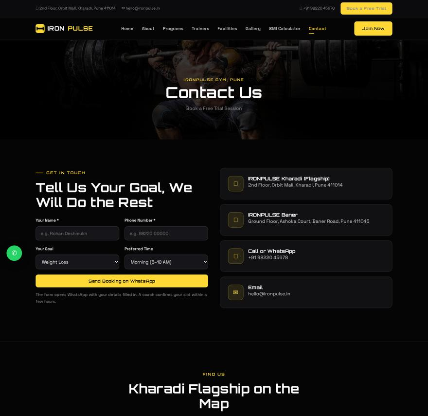
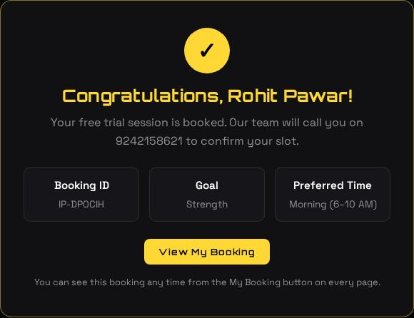
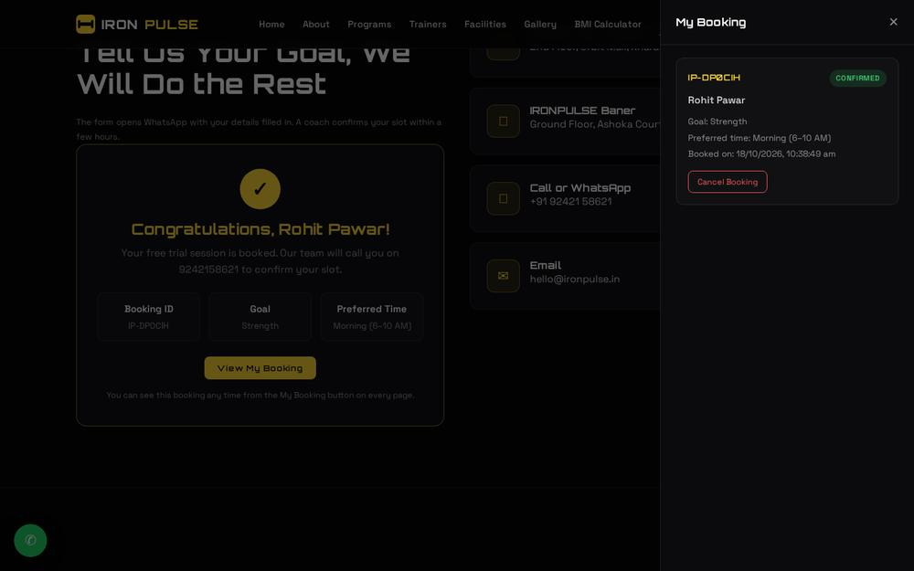

Demo Documentation / Booking Flow
Three steps, no app, no login. A customer fills a short form, gets a confirmation screen with a booking ID, and can see his booking any time from the My Booking panel on any page. Every booking also lands in the gym's admin panel instantly.
On the Contact page, the form asks for four things: name, phone number, fitness goal and preferred time of day. That is the whole form: short enough that people actually finish it.

The moment the form is submitted, the customer sees a congratulations screen. It confirms the booking and shows a unique booking ID (like IP-DP0CIH), the chosen goal and the preferred time. The booking is now in the gym's admin panel.

On every page of the website there is a yellow My Booking button at the bottom-right, with a small badge showing how many bookings the customer has. Opening it slides out a panel that lists his bookings: the booking ID, name, goal, preferred time and a Confirmed status. He can also cancel a booking from here, which removes it from the admin panel as well.
